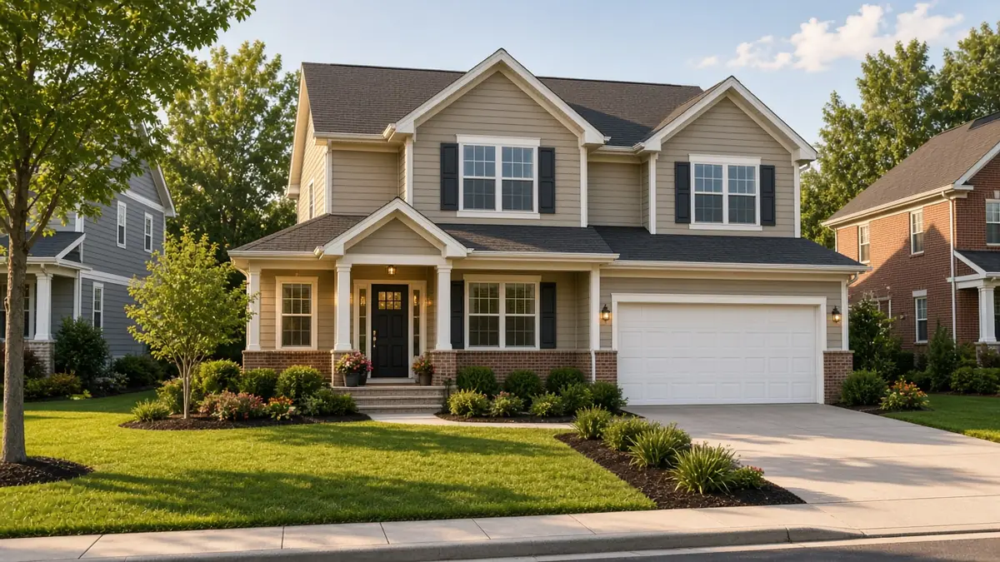

Also: Dallas rental after the tenant leaves · Sacramento Notice of Default guide · All guides
A Memphis foreclosure notice is in the mail. What the Tennessee calendar actually gives you

If you own a house in Memphis, Whitehaven, Frayser, Raleigh or Cordova and you are behind on the mortgage, the first thing to understand is that Tennessee is mostly a non-judicial foreclosure state. Almost every Tennessee home loan is secured by a deed of trust with a power-of-sale clause, which lets the trustee sell the house at a public auction without a lawsuit. No judge sets a hearing date for you. The calendar is set by the notices, so the notices are what you read closely.
Step 1: the "right to foreclose" letter
For most owner-occupied homes, Tennessee Code section 35-5-117 requires the lender or its servicer to mail a notice of the right to foreclose at least 60 days before the first publication of the sale notice. Treat that letter as the starting gun, not a warning shot. Write down the date it was mailed, the amount the servicer says it takes to reinstate, and the phone number of the loss-mitigation department. If you never received one, keep the envelopes you did get; an attorney may want to see them.
Step 2: the newspaper notice and the 20-day window
Under section 35-5-101, the trustee must publish the notice of sale at least three times in a newspaper in the county where the house sits, with the first publication at least 20 days before the sale. The notice names the date, time and place of the auction (in Shelby County that is usually at or near the courthouse) and is sent to you as well. Once that first ad runs, you are looking at a few weeks, not months.
Our state-by-state foreclosure timeline shows how short that is next to judicial states like Ohio or Florida, where a court case can take a year or more.
Step 3: the redemption right you probably waived
Tennessee law (section 66-8-101 and following) does give owners a statutory right to redeem a house for up to two years after a foreclosure sale, but only if the deed of trust doesn't waive it. Nearly every standard deed of trust does waive it. Pull your recorded deed of trust from the Shelby County Register of Deeds and look for the waiver language before you count on any time after the auction. In practice, assume the sale date is the deadline.
What you can still do before the sale date
- Reinstate. Ask the servicer in writing for a reinstatement quote good through a specific date, including late fees and trustee costs.
- Apply for a workout. A complete loss-mitigation application sent early gives you more protection under federal servicing rules than one sent the week of the sale. Call a HUD-approved housing counselor; it's free.
- Ask about postponement. Trustees can postpone a sale by announcement, but only the lender decides that, and it is never guaranteed.
- Sell the house yourself. If you have equity, a sale that closes before the auction pays off the loan and puts what is left in your pocket instead of going to the highest bidder on the courthouse steps.

Listing versus a cash sale when the clock is short
A traditional listing can work if the sale notice hasn't been published yet and the house shows well. Buyer financing, appraisal and inspection usually take 30 to 45 days after an accepted offer, so a listing that starts after the newspaper ads begin is a gamble. Ask any agent for a realistic closing date and compare it with the auction date on the notice.
A cash buyer can usually close in days once the title company has the payoff figure, and buys the house as-is, so the leaking roof or the foundation crack doesn't stall the deal. The trade-off is price: a cash offer will usually be lower than a retail listing could bring, so get the number in writing and compare your net, after payoff, against what a listing would really net you by the sale date. Make sure the title company orders the payoff directly from the servicer and that the trustee is told a closing is scheduled.
Paperwork to gather this week
- Every letter from the servicer and the trustee, in date order.
- Your most recent mortgage statement and any second mortgage or HELOC statement.
- Shelby County and City of Memphis property-tax status (both bill separately inside city limits).
- Any HOA, code-enforcement or utility liens you know about.
Where to go next
Our guide to selling a Memphis house facing foreclosure walks through the payoff and closing steps in more detail. If you want a number to compare, you can request a cash offer on your Memphis house and set it next to a listing estimate. To see who else buys houses for cash in the area, the Memphis cash home buyers comparison lays out the options, and the Tennessee cash-buyer hub covers Knoxville, Nashville and Chattanooga too.
HomeCashOffer is not a law firm and this isn't legal or tax advice. Talk to a licensed attorney in your state about your situation.